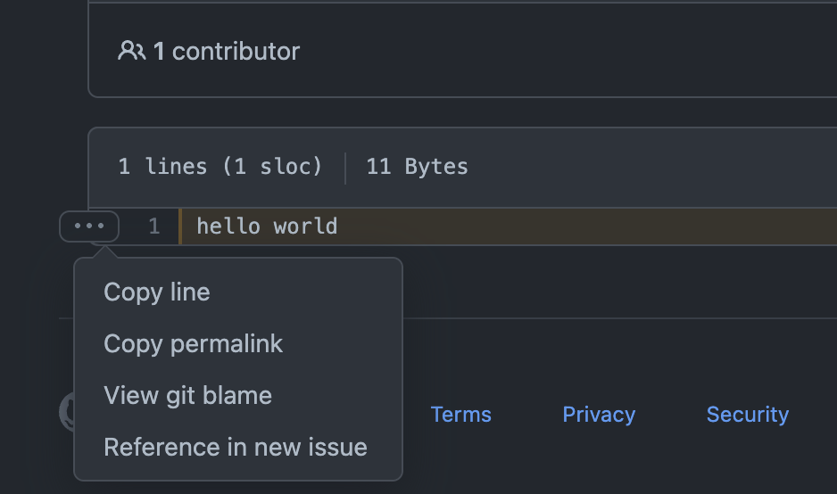
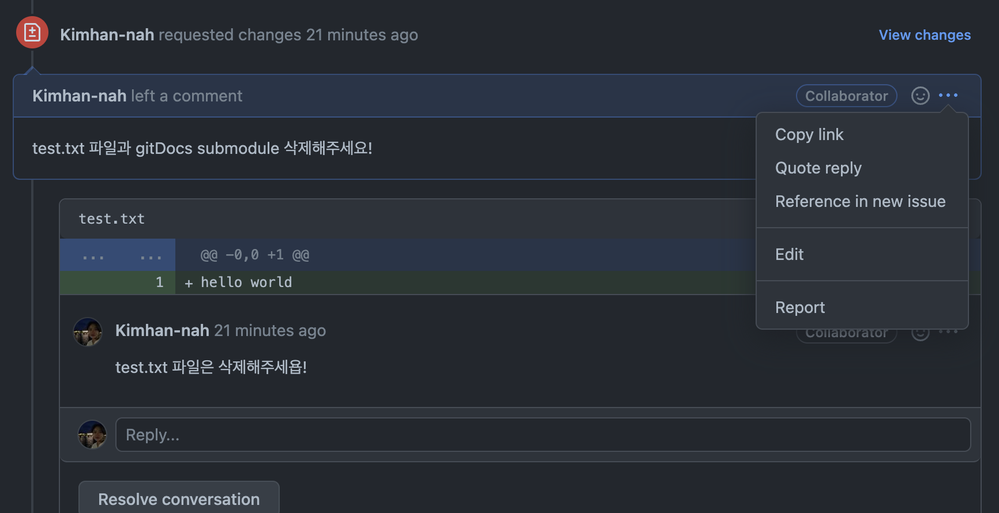
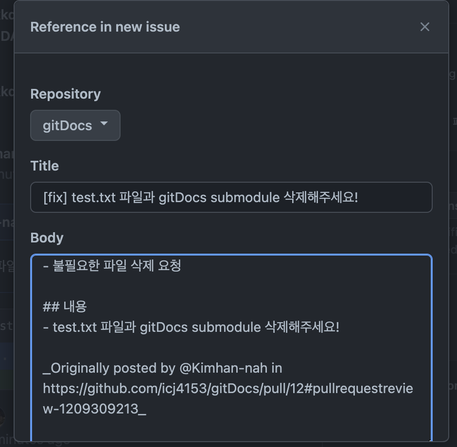
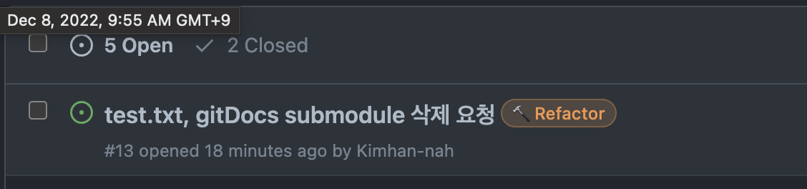

GitHub으로 협업하기
github issues
1. Issues 란?
- 프로젝트에서 발생하는 모든 문제를 관리할 수 있도록 도움
- 프로젝트의 작업, 개선 사항 및 버그 추적하는 좋은 방법으로 사용됨
- 모든 활동 내역에 대해서 issue를 등록하고, 등록한 issue 기반으로 작업을 진행할 수 있음
- issue 생성 → label(라벨), assignee(담당자) 등록 → 해결 후 issue closed
- 이슈의 오남용을 막기 위해 issue template을 활용할 수 있다
2. Issue 사용법
Issue 생성하기
- 가장 기본적인 생성 방법
- Issue → New issue

- Title, comment를 작성하고 Submit new issue하면 생성 완료
- 현재 존재하는 Pull Request의 코드로도 issue 생성 가능

- PR의 코드 리뷰로 남긴 comment도 issue로 생성 가능



Issue Label
- 이러한 문제점 개선을 위해 Label 기능 활용할 수 있다
- Labeling을 통해 이슈를 검색, 필터링을 할 수 있다
issue 완료 후 close